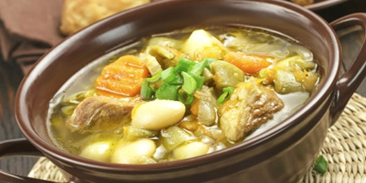

Chairo (La Sopa Tradicional De La Paz)
Se trata de una sopa preparada con chuño, carne de cordero, chalona remojada, papa, zanahoria, cebolla, habas, mote de maíz, hierba buena, wuacataya, orégano y sal al gusto.
Ingredientes
- ¼ Kg. pecho de vaca
- 1 colita o nudo de cordero
- 1 lonja de chalona
- 1 queso mediano
- ½ lb. chuño remojado o
- 1 taza de chuño seco
- 3 papas
- ¼ lb. mote y trigo cocido
- 1 cebolla
- colas de cebolla frescas
- 1 nabo
- 1 ramito de apio
- 1 ramito de perejil
- 5 hojas de hierba buena
- 1 platillo de habas y arvejas
- 1 cucharilla de pimentón rojo
- 1 pizca de pimienta molida
- 1 cucharilla de orégano desmenuzado
- 1 platillo de chicharrón de cerdo (opcional)
- 4 cucharillas de perejil finamente picado
- sal al gusto
- aceite
Preparación
- La chalona remojar en agua durante quince minutos y las demás carnes lavar bien.
- En olla a preside con uno y medio litros de agua hirviendo sin sal, hacer cocer los nudos del cordero o la colita, el pecho de vaca, la chalona escurrida, durante treinta minutos. Colar a otra olla y reservar caliente.
- Mientras tanto, raspar la cebolla, la zanahoria, el nabo; picar finamente la yerba buena y las colas de la cebolla. En una sartén con aceite caliente, saltear estos ingredientes junto con las habas, arvejas y al final añadir el pimentón colorado.
- Esta preparación incorporar a la olla del caldo con el apio y el perejil enteros lavados. Dejar cocer durante veinte minutos.
- El chuño remojado, pelar y lavar en un recipiente: con las manos coger de a poco y exprimir, eliminando el agua. Nuevamente sumergir en otra agua y seguir la misma operación hasta que el agua se aclare. (Si utiliza chuño seco, remojar la noche anterior).
- En un batán o licuadora martajar cada chuño, no muy molido, ni enteros y colocar en un recipiente con agua que lo cubra. Dejar reposar durante quince minutos, hasta que se asiente el chuño bien molido en la base.
- A la olla de las verduras, agregar el chuño martajado, cogiendo de arriba un poco y exprimiendo del recipiente que reposó, luego escurrir el agua, cuidando de no eliminar los residuos (la borra) que queda, sirve pare espesar; y junto con esta incorporar el trigo, el mote cocidos, las papas cortadas al hilo (finos) y los chicharrones. Una vez los ingredientes estén cocidos, añadir el orégano.
- Servir el chairo, espolvorear una cucharilla de perejil y acompañar con el queso cortado en tajadas.